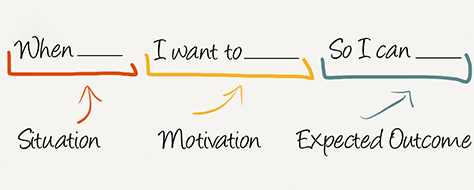
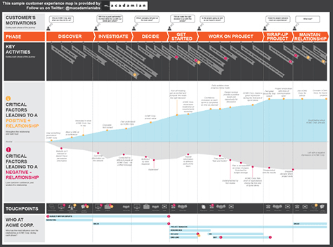
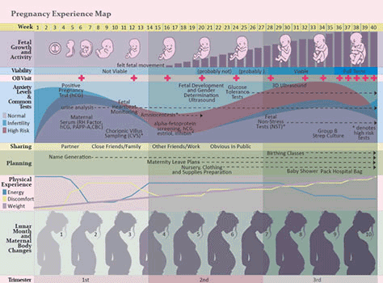

UX professionals have pretty much mastered identifying, understanding, and evaluating problems and their solutions. However, they are usually only involved in the final stages of the usability process. What many companies do not realize is the value of having a UX designer in all the stages of the development process.
When companies develop a product with a competitive advantage, it is important for UX designers to be heavily involved in the process. They thoroughly learn about the users and their needs in their research. They have the ability to provide great insight and data related to the target audience. Through their research, they also analyze how other companies are tackling similar issues and what is working towards solving it. The previously common “jobs to be done” (Alan Klement) model is no longer effective enough to define the whole process.
“Good tools for analyzing user problems visually are the customer journey map, which shows how people use a product, and the experience map, which takes a broader look at solving a user’s life problems. Figure 12 shows an example of a customer journey map; Figure 13, an example of an experience map. Designers can teach product managers how to use these tools — although the most progressive among them already use them.” — Yury Vetrov of UX Matters
Although great tools, these maps do not have to be nearly as polished as the ones mentioned. The point of them is to help mangers and designers to visualize their user problems together. The problem with many companies today is that they don’t consider thoroughly analyzing their target audience until later on down the line. The consider launching their top priority and then tackle each problem as it comes. With the help of UX designers throughout the process, they can focus more on identifying problems they can solve before they face them.